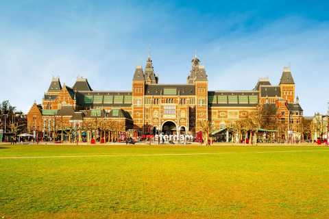

Museumplein
Museumplein é a Praça dos Museus, é um espaço público de Amsterdam. O local abrigava originalmente fábrica de velas e também era encoberto por prado pantanoso. A construção do local público teve início em 1885, depois conclusão do prédio principal do Museu Nacional, e teve plano urbanístico do projetista Pierre Cuypers. Em 1999, a praça foi reconstruída, de acordo com o plano do arquiteto paisagista Sven-Ingvar Andersson.